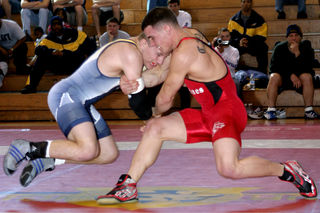

Боротьба
Боротьба́ — вид спорту, єдиноборство за певними правилами. Боротьба була відома як бойове мистецтво у древніх народів. загалом певне у кожного народу була поширена силова боротьба з більшою чи меншою кількістю прийомів. У сучасній спортивній практиці прийняті класична боротьба (греко-римська, раніше - французька) та вільна боротьба (раніше називалася вільноамериканська).
Боротьба проводиться на килимі (маті) розмірами (у м) від 6×6 до 8×8. У вільній боротьбі, на відміну від класичної, дозволені захвати противника нижче пояса й підніжки. Тривалість сутички — 10 і 12 хв. Перемога присуджується борцеві, який примусив противника доторкнутися до килима обома лопатками або виявив вищу майстерність. Для урівняння сил борців поділяють на 8 вагових категорій. Боротьба розвиває силу, витривалість, сприяє вихованню волі.